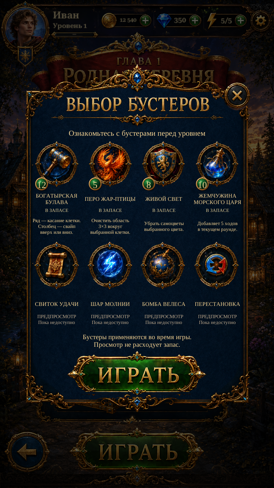

Shared Booster Icons R1Shared Booster Icons · R1
Original hammer, Firebird, shield and potion artwork now forms one shared family across the game. Framed and isolated variants retain the same source subjects. Four unavailable previews are extracted and labelled separately.
Compare all eight source icons and extracted sprites · Implementation and verification
Actual Unity captures with isolated test saves. Stock, effects, rewards and navigation retain their existing behavior. Mail attachments remain examples; the seven-type receipt is a test diagnostic. The original reference is marked separately.
